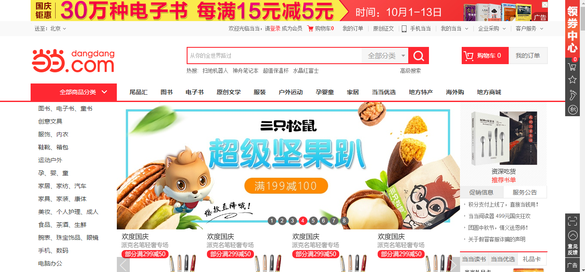

贺会强
WebQiang
一生行走于代码
我的信息
- 意向职位：
- Web前端开发
- 期望待遇：
- 面议
- 目标城市：
- 杭州
- 专 业：
- 信息与计算科学
- 学 历：
- 本科
- 电 话：
- 18322803026
- 邮 箱：
- 18322803026@163.com
- Q Q：
- 1591173911
我擅长的
- HTML
- CSS
- JavaScript
- Html5
- jQuery
- Bootstrap
- PHP
- Node.js
- Angularjs
我的心得
- 个人网站:
- www.hehuiqiang.com
- github网站:
- github.com/H246802.io
- github账号:
- H246802
- 你说程序员的世界只有黑白
- 我说黑白里的极光你没机会领略
- 你说夜里飞快的敲击是种折磨
- 我说那声音不比布谷鸟枯燥
- 你说的世界
- 我说的
- 也是世界
我的技能
- 精通HTML+CSS布局，精通html语义,能解决常见的布局问题(浮动,溢出等);
- 精通JavaScript原生制作网页中的轮播图等特效;
- 能熟练使用JavaScript进行函数块的封装,提升代码逻辑性和可复用率;
- 熟悉 jQuery的使用 如制作网页特效以及解决ajax的跨域问题;
- 熟悉前后端通信 精通ajax 以及 json数据解析;
- 熟练应用CSS3动画、Html5新标签如音视频、表单新元素,度量尺canvas,svg等;
- 熟悉Bootstrap框架，用以实现具有响应式布局的网页,进行跨平台的适配.
- 能进行简单的框架封装,了解框架封装的基础原理和步骤.
- 了解AngularJS框架,能进行基础的数据绑定，了解MVC架构模式，实现基于此模式的简单网页;
- 对浏览器兼容性问题(如IE的条件注释等等)有一定经验（包括各个移动平台的浏览器）
- 了解PHP这一后台语言,运用其能进行与后台的交互,实现对数据的获取、抓包,优雅地呈现在网页上
- 熟悉MySQL数据库语句，以及基本操作.
- 数据结构 基础算法(穷举法 基本排序算法 二分查找) 设计模式 代码调试.
我的项目



仿当当首页
简介: 高度还原当当首页页面,包括样式与特效(团队完成)
主要运用技术：HTML+CSS、javaScript+jQuery、php、mysql

我想
希望加入一家以技术为驱动的互联网公司，从事前端开发的工作，希望公司有扁平的管理结构，有良好的上下沟通渠道。